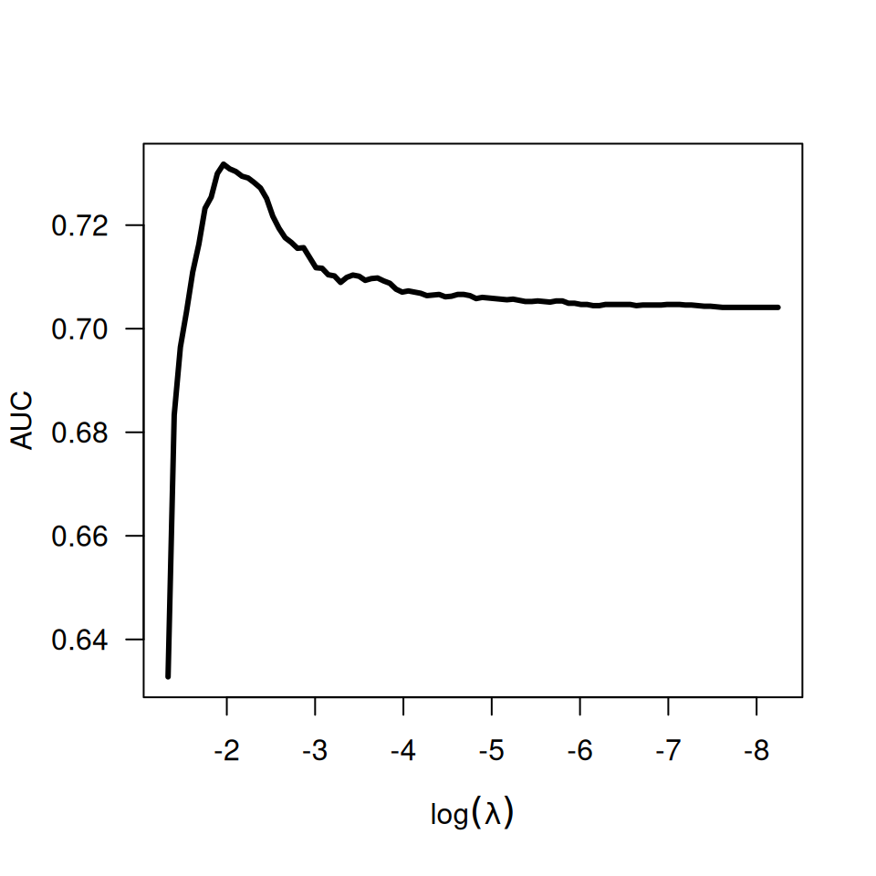

Calculates the cross-validated AUC (concordance) from a "cv.grpsurv" object.
Arguments
- obj
A
cv.grpsurvobject. You must runcv.grpsurv()with the optionreturnY=TRUEin order forAUCto work.- ...
For S3 method compatibility.
Details
The area under the curve (AUC), or equivalently, the concordance statistic
(C), is calculated according to the procedure described in van Houwelingen
and Putter (2011). The function calls survival::concordancefit(), except
cross-validated linear predictors are used to guard against overfitting.
Thus, the values returned by AUC.cv.grpsurv() will be lower than those you
would obtain with concordancefit() if you fit the full (unpenalized) model.
References
van Houwelingen H, Putter H (2011). Dynamic Prediction in Clinical Survival Analysis. CRC Press.
Examples
set.seed(1)
data(Lung)
X <- Lung$X
y <- Lung$y
group <- Lung$group
cvfit <- cv.grpsurv(X, y, group, returnY=TRUE)
head(AUC(cvfit))
#> [1] 0.6327806 0.6833826 0.6964448 0.7033167 0.7109269 0.7163221
ll <- log(cvfit$fit$lambda)
plot(ll, AUC(cvfit), xlim=rev(range(ll)), lwd=3, type='l',
xlab=expression(log(lambda)), ylab='AUC', las=1)
